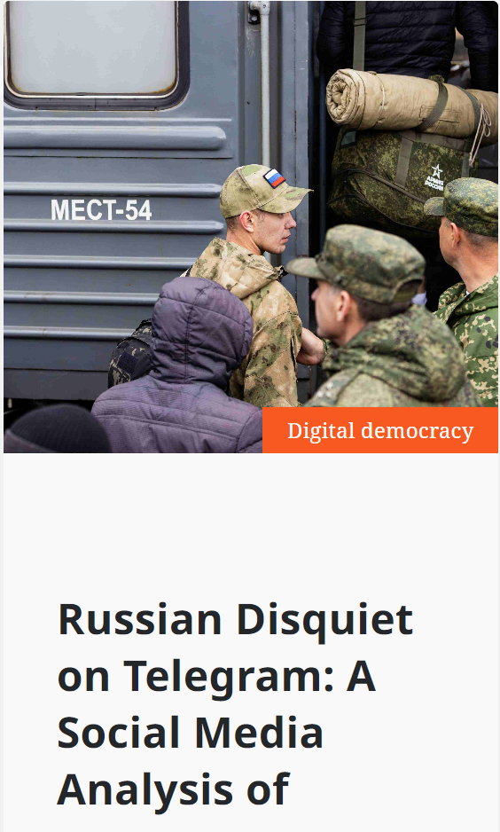
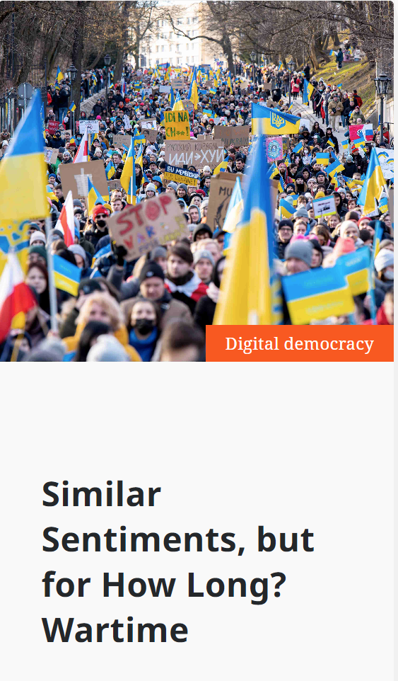

Ana's Blog
Just for fun!
Toggle navigation
Home
About me
Blog
These are the main projects that I contributed to as a Data Analyst/Data Scientist while working for Democracy-Reporting International.

See details →
Russian Disquiet on Telegram: A Social Media Analysis of Russian Debates on the War in Ukraine

See details →
Similar Sentiments, but for How Long? Wartime Pluralism and Online Discourse in Ukraine
See details →
Words, Deeds and Perceptions - Ukrainian Social Media Debates on Wartime Allies

 Ana's Blog
Just for fun!
Ana's Blog
Just for fun!